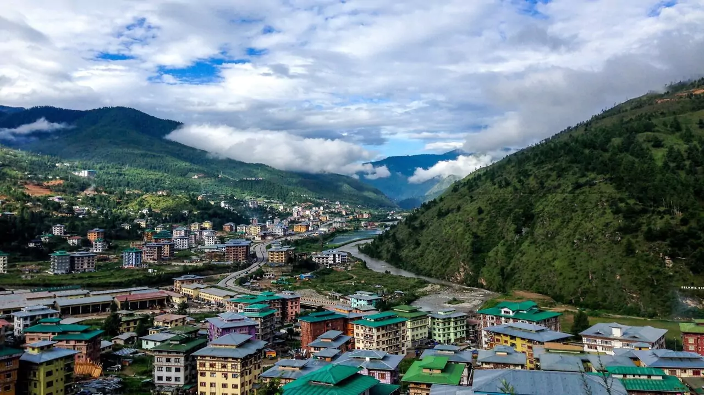
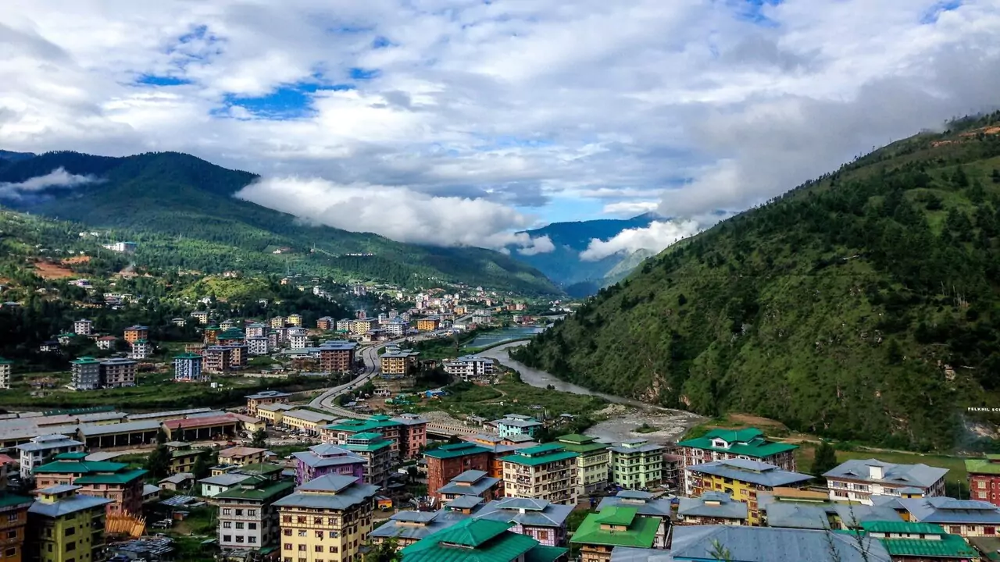

Description
Bhutan, the Land of the Thunder Dragon, offers a unique blend of spirituality, culture, and breathtaking landscapes. Highlights of Bhutan tourism include the iconic Tiger's Nest Monastery (Paro Taktsang), perched on a cliffside, and the vibrant capital city, Thimphu, home to the majestic Tashichho Dzong and the giant Buddha Dordenma statue. Experience Bhutan's rich heritage at Punakha Dzong, one of the country's most beautiful fortresses, and witness the stunning beauty of Phobjikha Valley, a winter home to the rare black-necked cranes. Adventure seekers can trek through the Himalayan landscapes or explore the untouched wilderness of Dochula Pass. With its deep-rooted Buddhist culture, colorful festivals, and commitment to Gross National Happiness, Bhutan offers an enchanting travel experience like no other.
Things to do in Bhutan
Bhutan offers a unique mix of adventure, spirituality, and cultural experiences. A visit to the iconic Tiger's Nest Monastery (Paro Taktsang) is a must, offering breathtaking views after a scenic hike. Explore the capital, Thimphu, where you can visit the Buddha Dordenma statue, Tashichho Dzong, and local markets. Experience Bhutan's rich heritage at Punakha Dzong, one of the country's most beautiful fortresses. Nature lovers can trek through the stunning Himalayan landscapes, visit the serene Phobjikha Valley, or cross the picturesque Dochula Pass, known for its 108 memorial chortens. Bhutan is also famous for its vibrant festivals (Tshechus), featuring colorful masked dances and cultural performances. Whether it's exploring monasteries, trekking, or experiencing local traditions, Bhutan offers an unforgettable journey.
Best local food to try in Bhutan
Bhutanese cuisine is rich in flavors, with a unique blend of spices, cheese, and fresh ingredients. The most iconic dish is Ema Datshi, a spicy stew made with chilies and local cheese, often considered Bhutan's national dish. Kewa Datshi (potatoes with cheese) and Shamu Datshi (mushrooms with cheese) are other delicious variations. Phaksha Paa, a flavorful pork dish cooked with red chilies and radish, is a must-try for meat lovers. Jasha Maru, a spicy chicken stew, and Hoentay, buckwheat dumplings filled with cheese and vegetables, are also local favorites. Accompany your meal with red rice, a staple in Bhutanese cuisine. To end on a sweet note, try Suja, Bhutanese butter tea, or Zow Shungo, a rice and vegetable dish made from leftovers, reflecting Bhutan's zero-waste food culture.
Right time to visit Bhutan
The best time to visit Bhutan is during spring (March to May) and autumn (September to November) when the weather is pleasant, and the landscapes are at their most beautiful.
Spring brings blooming rhododendrons and lush greenery, making it perfect for trekking and sightseeing. Autumn offers clear skies and stunning views of the Himalayas, making it ideal for hiking and cultural festivals like Thimphu Tshechu and Paro Tshechu.
Winter season from December to February is a great time to visit for fewer crowds and crisp mountain views, especially in places like Phobjikha Valley, where you can see black-necked cranes.
Summer (June to August) is the monsoon season, bringing lush landscapes but occasional rain showers.
Gallery

 
